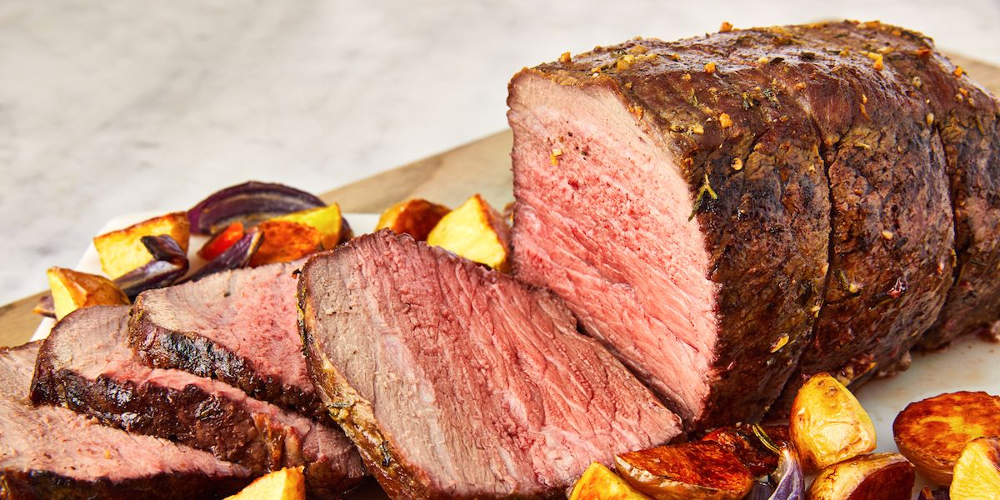

Roast Beast

'He took the Who's feast, he took the Who pudding, he took the roast beast.'
From Dr Seuss' 'The Grinch', in the absence of a beast, we will instead be making roast beef
Ingredients
- 1 round roast
- 3 cloves garlic, minced
- 1 tbsp rosemary, chopped
- 1 tbsp thyme leaves, chopped
- 2 tsp salt
- 1 tsp ground black pepper
- 3 tbsp extra-virgin olive oil
Steps
- Preheat the oven to 240C/220 fan.
- In a bowl combine garlic, rosemary, thyme, salt, pepper and oil. Rub over roast.
- Place in a roasting tin and cook for 20 mins.
- Reduce oven to 190c/170 fan and continue to cook for 30 mins (rare), 40 mins (medium) or 1 hour (well done).
- Remove from the oven and allow to rest for 30 mins.
- Serve with roast potatoes (or Who hash!)